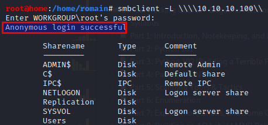

(1) SMB :

(1) Look into 445 with smbclient- - smbclient -L \\\\10.10.10.100\\
- => List content of directory 10.10.10.100
- 
- => Anonymous login successfull
(2) See what folder/share we can connect to
- smbclient \\\\10.10.10.100\\ADMIN$

- smbclient \\\\10.10.10.100\\IPC$

- smbclient \\\\10.10.10.100\\Replication
 (3) Download the SMB share
(3) Download the SMB share- - RECURSE ON
- - PROMPT OFF (for quicker exec)
- - mget *
-